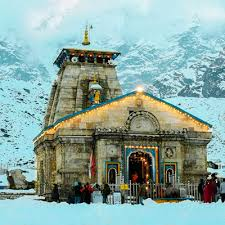
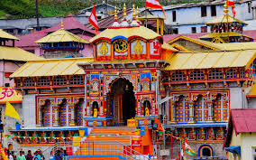

Kedarnath Temple


Location: Rudraprayag district, Uttarakhand, in the Garhwal Himalayas
Deity: Lord Shiva (one of the 12 Jyotirlingas)
Altitude: 3,583 meters (11,755 ft) above sea level
Historical Era: Believed to be built by the Pandavas, with the present structure rebuilt by Adi Shankaracharya in the 8th century.
Architecture: Stone-built temple with a pyramidal tower, surrounded by snow-capped peaks.
Access: Requires a 16–18 km trek from Gaurikund or helicopter services.
Festivals: Maha Shivaratri and Kedarnath opening day draw huge crowds.
Season: April/May to October/November (closed during winter due to snow).
Badrinath Temple


Location: Chamoli district, Uttarakhand, on the banks of the Alaknanda River
Deity: Lord Vishnu (as Badrinarayan)
Altitude: 3,300 meters (10,827 ft) above sea level
Historical Era: Re-established by Adi Shankaracharya in the 8th century.
Architecture: Distinct colorful façade with Garhwali wooden style and a conical dome.
Spiritual Significance: Lord Vishnu meditated here under a Badri tree.
Season: April/May to October/November (closed during winter).
Festivals: Badri Kedar Utsav, Mata Murti Ka Mela, and opening day ceremonies.